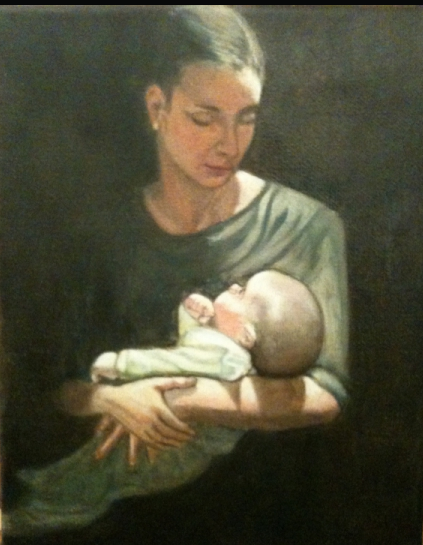

Dialogue 1 :
Prêtre :
Est-ce que quelqu'un souhaite prendre la parole pour rendre hommage à Monsieur Mollinski ?
Sylvie Legendre Mollinski :
Oui ! Monsieur Mollinski était avant tout mon mari, un homme brillant, qui savait faire marcher un business, un grand homme d'affaires... Et même s'il n'était pas tendre avec tout le monde, il faisait ça pour que l'on manque de rien qu'on puisse évoluer dans la vie, face à ce terrible monde d'inégalité qui nous entoure.
Qu'on est de quoi s'en sortir... Édouard était quelqu'un de prévoyant. Ça lui arrivait d'être très gentil par moments, les rencontrés lorsque j'avais 16 ans, je dois avouer que je n'étais pas prête à la vie merveilleuse qu'il allait m'offrir... Cependant j'ai fortement nié le bonheur qu'il m'a fait et les merveilleux enfants qu'il m'a donnés, Éric, Judith et Silvia... Qui me remplit de bonheur au quotidien.
Il a donné un sens à ma vie moi qui n'étais rien et je l'aimais malgré tout....
Dialogue 2 :
Sylvie Legendre Mollinski : s'adressant à Hugh.
Il faut partir ça sert à rien de rester plus longtemps...
Elle prend 2 gellule de médicaments d'un coup .